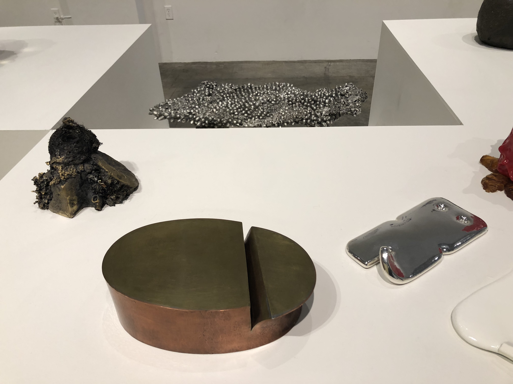
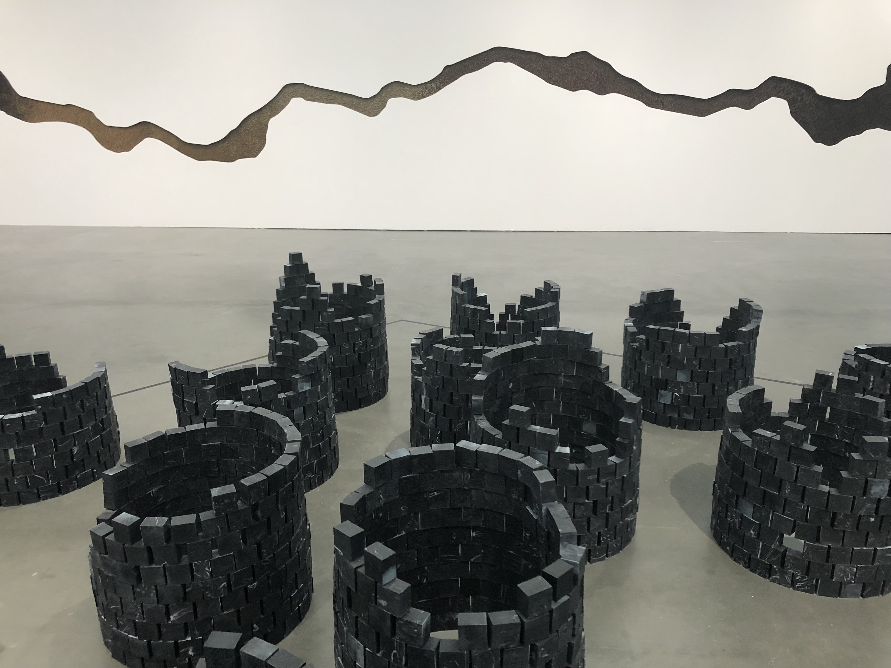
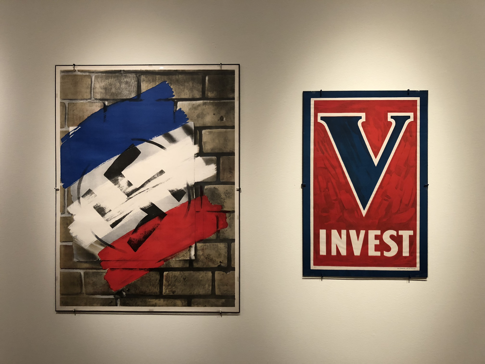
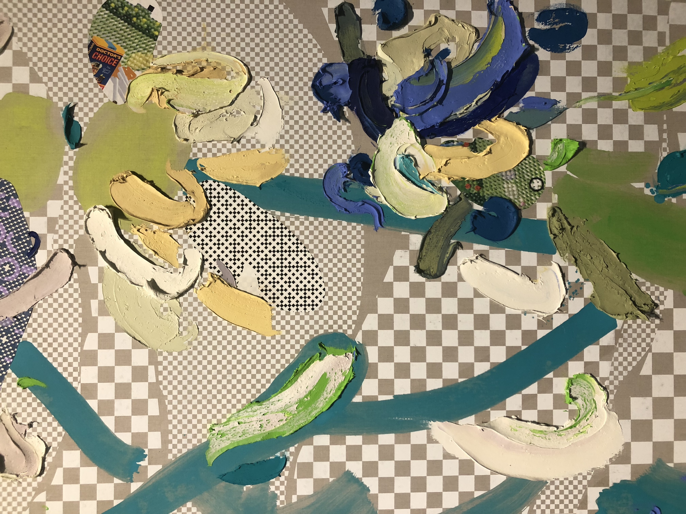
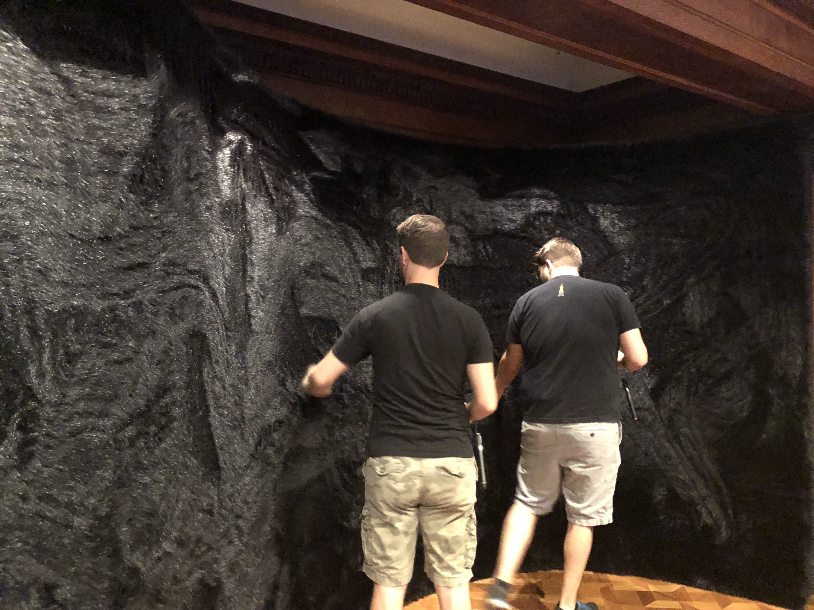
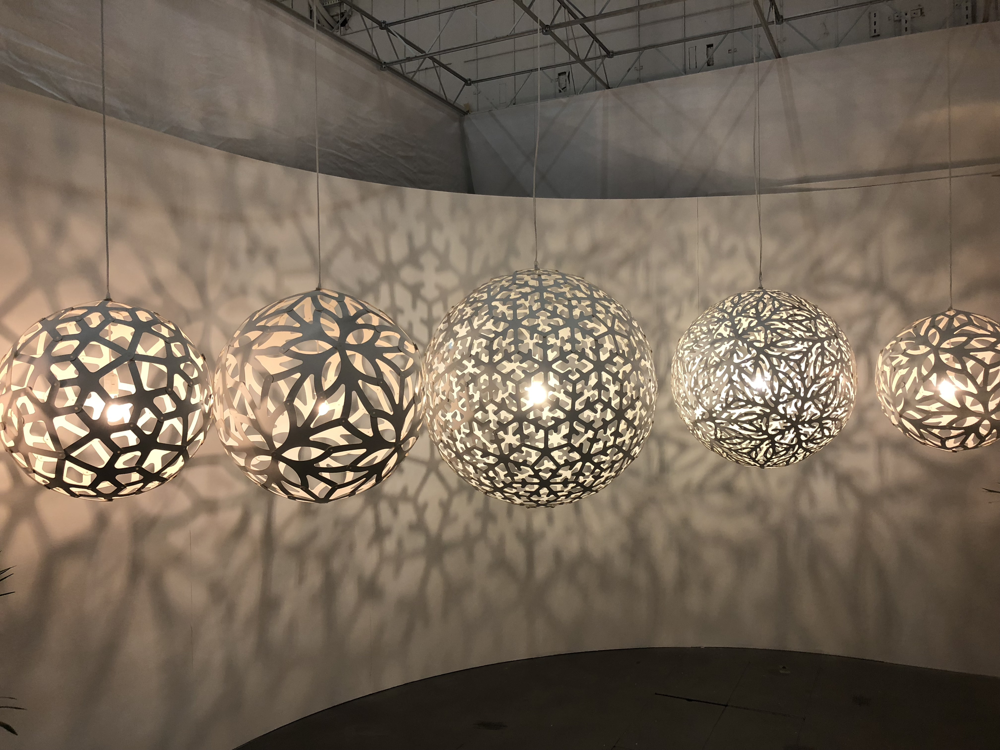
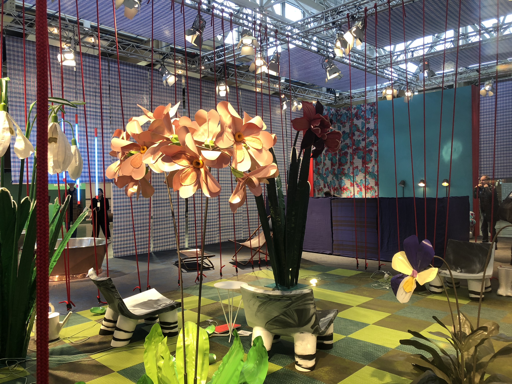
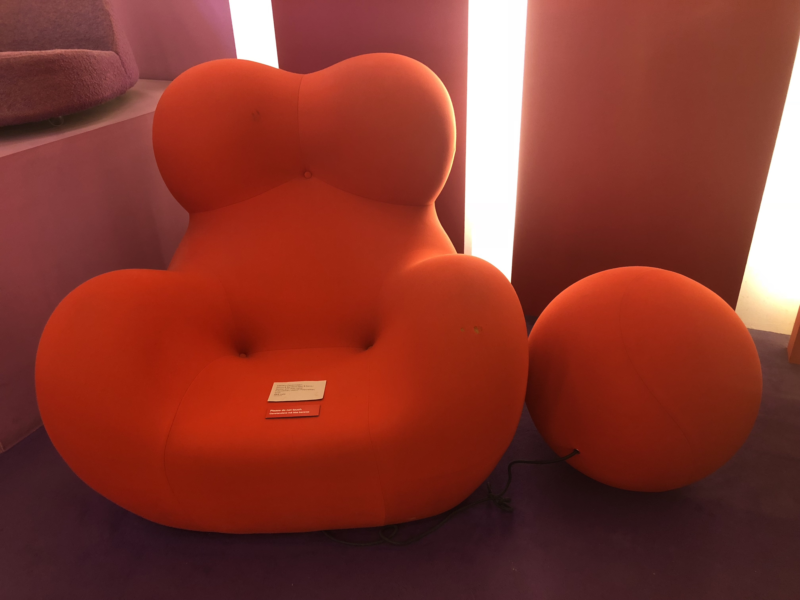
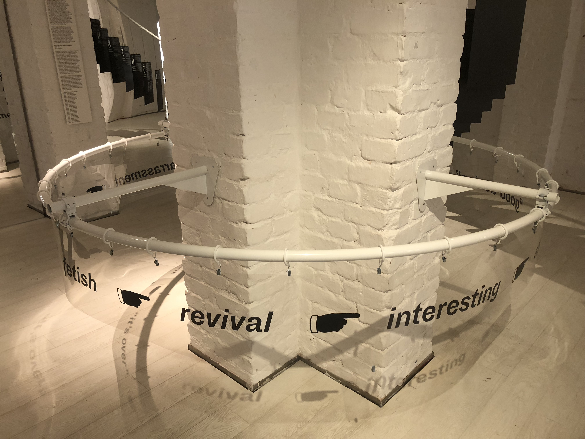
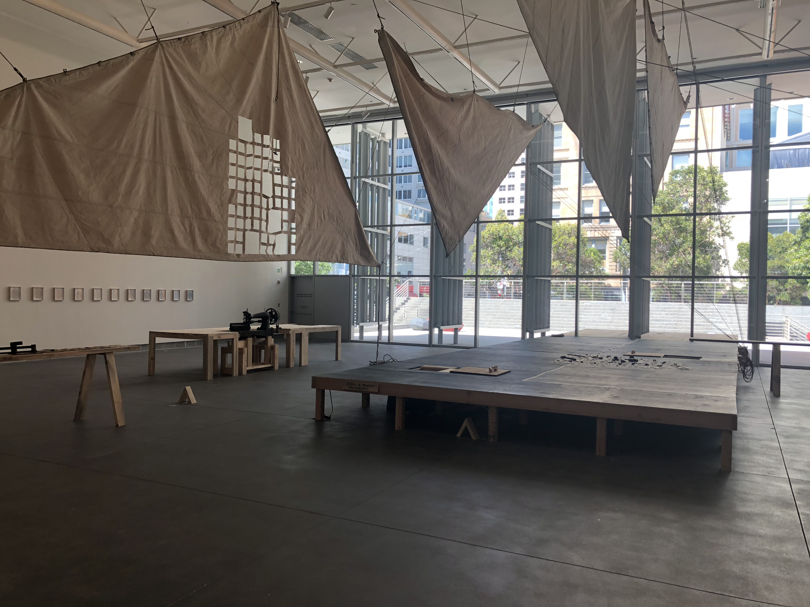

Design
I consider myself a designer foremost; thus design is a discipline I engage with professionally and personally. Well-designed artifacts have an underlying commonality: engagement with pertinent issues and informing human interaction.

The use of non traditional materials—especially unformtable ones—can create unforseen human-artifact interactions.

The barrels are actually bars of soap—an analogy referring to the circular economy

The fun, bright facade of a grocery store scheduled to shut down

The juxtaposition of layering analog materials over a digital medium interests me as an interdisciplinary designer

Sensorial interactions-beyond visual interfaces-are always more engaging with people

Sensorial interactions-beyond visual interfaces-are always more engaging with people

Sensorial interactions-beyond visual interfaces-are always more engaging with people

Sensorial interactions-beyond visual interfaces-are always more engaging with people

Sensorial interactions-beyond visual interfaces-are always more engaging with people

Sensorial interactions-beyond visual interfaces-are always more engaging with people